Výstup: dokumentace, validace
Náhled hlavního výstupu
Celkem - EK
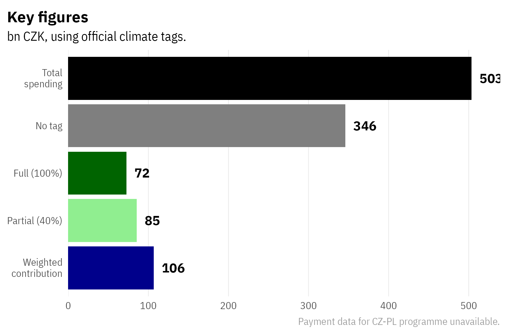
Celkem - CDE
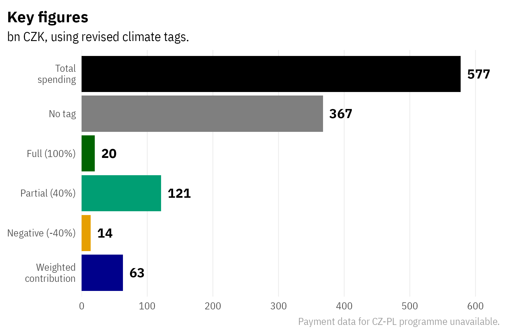
Srovnání tagů
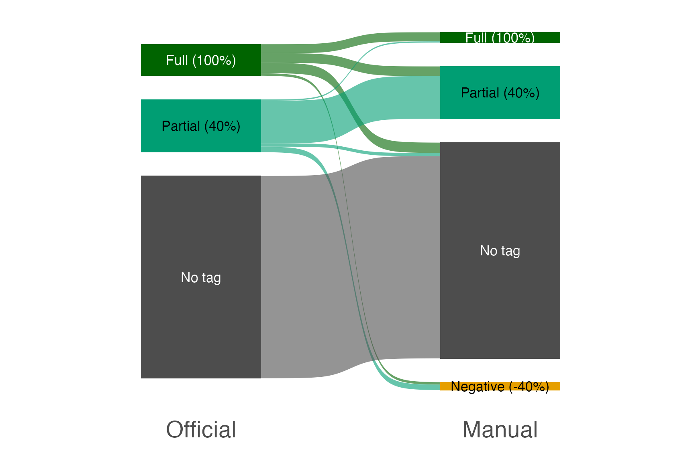
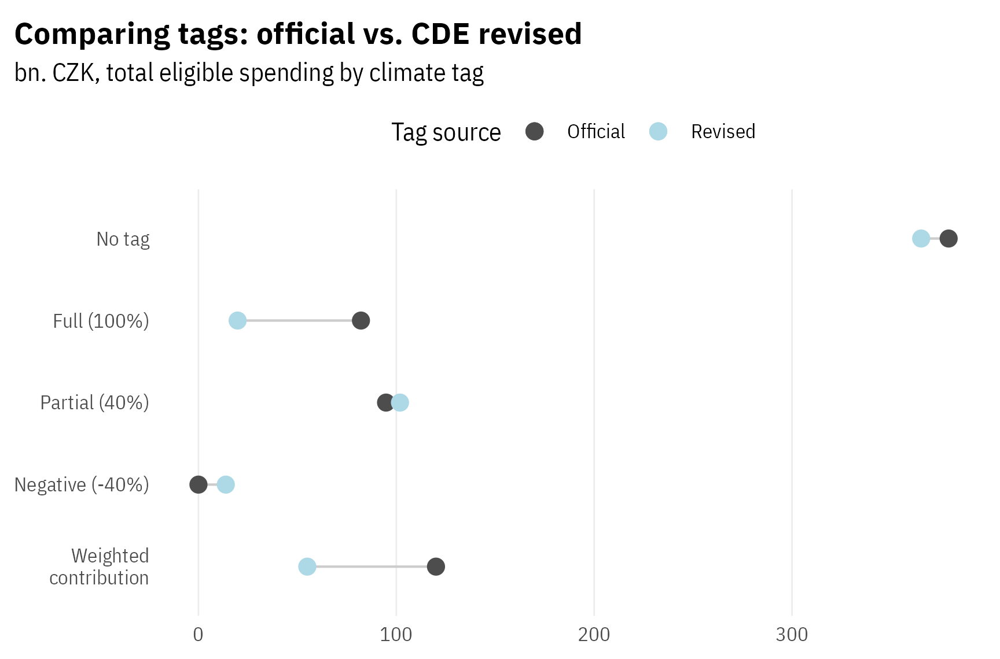
Všechny OP
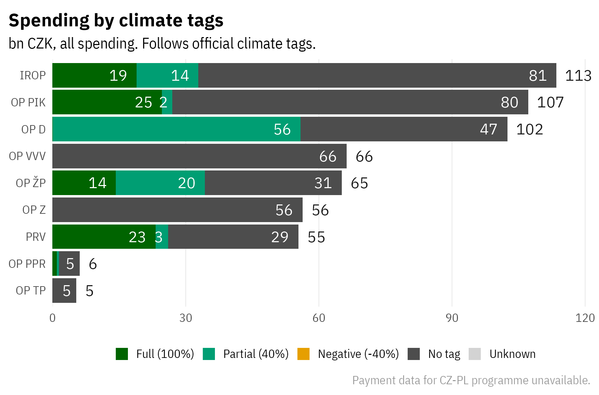
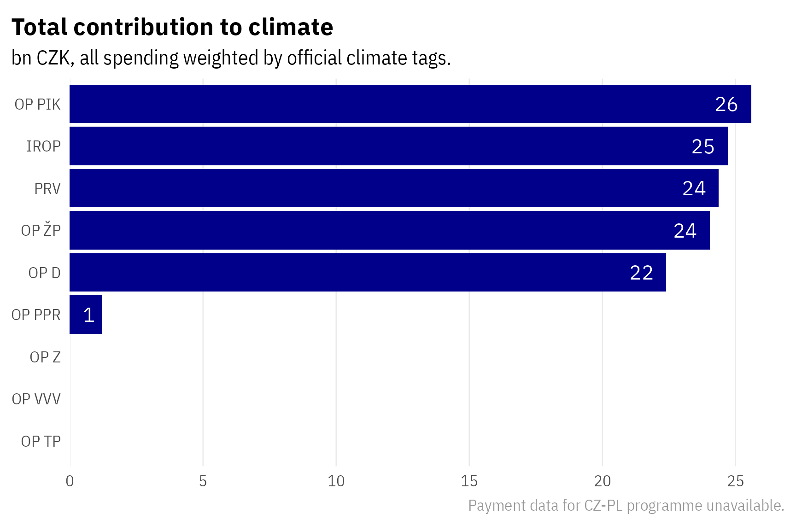
Všechny OP - CDE
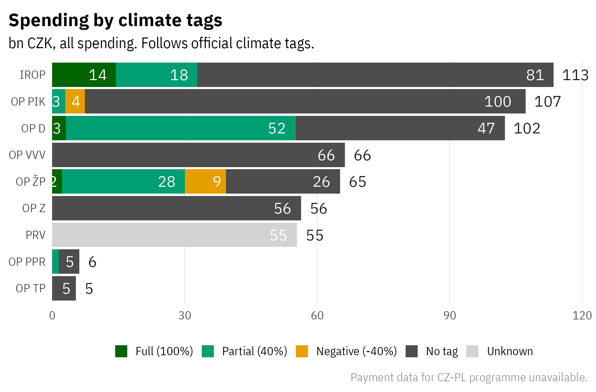
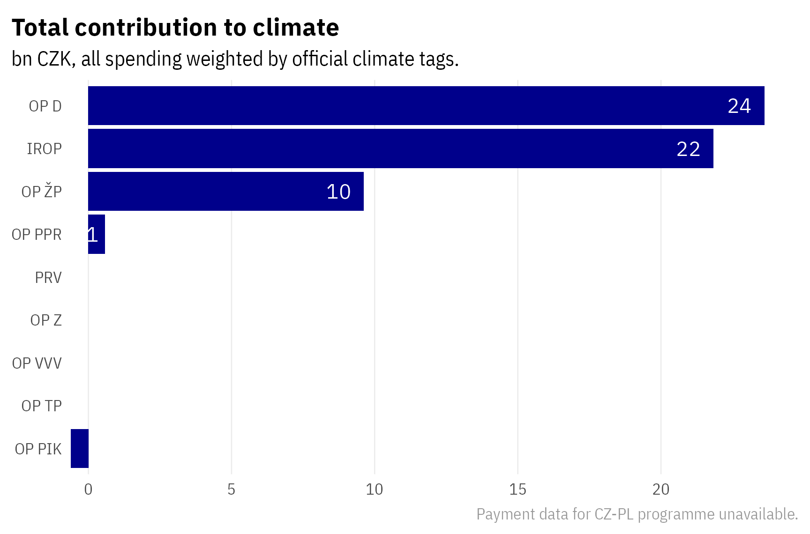
SZP vč. PRV

Dokumentace hlavního výstupu
Soubory
Vše v data-export/export_202110 (Github)
- OP + klimatag:
sum_tagged_all_ops.xlsx/sum_tagged_all_ops.csv - totéž + kategorie, z níž je odvozen klimatag:
sum_tagged_all_ops_detail.xlsx/sum_tagged_all_ops_detail.csv - totéž + kategorie, z níž je odvozen klimatag + spec. cíl; vše mimo
PRV:
sum_tagged_nonagri_detail.xlsx/sum_tagged_nonagri_detail.csv - totéž + kategorie, z níž je odvozen klimatag + spec. cíl + projekt;
vše mimo PRV:
sum_tagged_nonagri_projekty.xlsx/sum_tagged_nonagri_projekty.parquet- velký soubor, export je ve formátu Parquet - celé CAP výdaje s klimatagy a opatřeními determinujícími klimatag:
sum_tagged_agri_detail.xlsx/sum_tagged_agri_detail.csv
CSV soubory uzpůsobeny pro Excel (úprava konce řádků) a CEE region (odděleno středníky, desetinná čárka).
Codebook
Projektová úroveň
Zapsáno v data-export/export_202110/codebook_prj.yaml
| Pointblank Information |
|---|
| Codebook hlavního výstupu
tibble
dataRows
119,424
Columns
26
|
| Table |
INFOTabulka se součty výdajů podle OP, klima tagu a kategorie určující klimatag |
ROZSAHZ CAP/SZP zahruje jen PRV - projektová i plošná opatření |
PROMĚNNÉkategorie určující klimatag je u PRV opatření, u ostatních OP je to oblast intervencí |
DETAILCodebook obsahuje všechny proměnné obsažené v různých exportech |
CELKOVÁ STRUKTURAdlouhý formát: kategorie jsou v řádcích, metadata a jednotlivé zdroje financí jsou ve sloupcích |
NÁZVY PROMĚNNÝCHplatí i pro ostatní datové sady v pipeline:
|
| Columns |
TYP Oblast intervence (area of intervention) NOTE Nexistuje u výdajů CAP - zde jen nařízení DETAIL Kategorie určená v nařízení, na niž jsou v prováděcím nařízení navázány klima tagy |
TYP Oblast intervence (area of intervention) NOTE Nexistuje u výdajů CAP - zde jen nařízení DETAIL Kategorie určená v nařízení, na niž jsou v prováděcím nařízení navázány klima tagy |
POPIS Podíl přispění ke klimatu - podle prováděcího nařízení EK |
POPIS Kód projektu Kód projektu TYP Informace o projektu. Nedostupné u PRV |
TYP Identifikace specifického cíle podle OP |
TYP Identifikace specifického cíle podle OP |
POPIS Česká zkratka operačního programu |
POPIS Kód operačního programu |
TYP Finance JEDNOTKA CZK ZDROJ DAT ŽOP sečtené podle data proplacení ZDROJ FINANCÍ Celkové způsobilé výdaje |
TYP Finance JEDNOTKA CZK ZDROJ DAT ŽOP sečtené podle data proplacení ZDROJ FINANCÍ Příspěvek Unie |
TYP Finance JEDNOTKA CZK ZDROJ DAT ŽOP sečtené podle data proplacení ZDROJ FINANCÍ Národní |
TYP Finance JEDNOTKA CZK ZDROJ DAT ŽOP sečtené podle data proplacení ZDROJ FINANCÍ Soukromý |
TYP Finance JEDNOTKA CZK ZDROJ DAT ŽOP sečtené podle data proplacení ZDROJ FINANCÍ Celkové způsobilé výdaje |
TYP Finance JEDNOTKA CZK ZDROJ DAT ŽOP sečtené podle data proplacení ZDROJ FINANCÍ Příspěvek Unie |
TYP Finance JEDNOTKA CZK ZDROJ DAT ŽOP sečtené podle data proplacení ZDROJ FINANCÍ Národní |
TYP Finance JEDNOTKA CZK ZDROJ DAT ŽOP sečtené podle data proplacení |
TYP Finance JEDNOTKA CZK ZDROJ DAT ŽOP sečtené podle data proplacení ZDROJ FINANCÍ Soukromý |
TYP Finance JEDNOTKA CZK ZDROJ DAT ŽOP sečtené podle data proplacení ZDROJ FINANCÍ Národní |
|
TYP Informace o projektu. Nedostupné u PRV |
|
|
TYP Informace o projektu. Nedostupné u PRV |
POPIS Název příjemce TYP Informace o příjemci |
TYP Informace o příjemci |
POPIS Právní forma příjemce TYP Informace o příjemci |
| 2022-03-03 18:29:41 CET < 1 s 2022-03-03 18:29:41 CET |
Součty
Zapsáno v data-export/export_202110/codebook_sum.yaml
| Pointblank Information |
|---|
| Codebook hlavního výstupu
tibble
dataRows
194
Columns
20
|
| Table |
INFOTabulka se součty výdajů podle OP, klima tagu a kategorie určující klimatag |
ROZSAHZ CAP/SZP zahruje jen PRV - projektová i plošná opatření |
PROMĚNNÉkategorie určující klimatag je u PRV opatření, u ostatních OP je to oblast intervencí |
DETAILCodebook obsahuje všechny proměnné obsažené v různých exportech |
CELKOVÁ STRUKTURAdlouhý formát: kategorie jsou v řádcích, metadata a jednotlivé zdroje financí jsou ve sloupcích |
NÁZVY PROMĚNNÝCHplatí i pro ostatní datové sady v pipeline:
|
| Columns |
TYP Oblast intervence (area of intervention) NOTE Nexistuje u výdajů CAP - zde jen nařízení DETAIL Kategorie určená v nařízení, na niž jsou v prováděcím nařízení navázány klima tagy |
TYP Oblast intervence (area of intervention) NOTE Nexistuje u výdajů CAP - zde jen nařízení DETAIL Kategorie určená v nařízení, na niž jsou v prováděcím nařízení navázány klima tagy |
POPIS Podíl přispění ke klimatu - podle prováděcího nařízení EK |
POPIS Česká zkratka operačního programu |
POPIS Kód operačního programu |
TYP Finance JEDNOTKA CZK ZDROJ DAT ŽOP sečtené podle data proplacení ZDROJ FINANCÍ Celkové způsobilé výdaje |
TYP Finance JEDNOTKA CZK ZDROJ DAT ŽOP sečtené podle data proplacení ZDROJ FINANCÍ Příspěvek Unie |
TYP Finance JEDNOTKA CZK ZDROJ DAT ŽOP sečtené podle data proplacení ZDROJ FINANCÍ Národní |
TYP Finance JEDNOTKA CZK ZDROJ DAT ŽOP sečtené podle data proplacení ZDROJ FINANCÍ Soukromý |
TYP Finance JEDNOTKA CZK ZDROJ DAT ŽOP sečtené podle data proplacení ZDROJ FINANCÍ Celkové způsobilé výdaje |
TYP Finance JEDNOTKA CZK ZDROJ DAT ŽOP sečtené podle data proplacení ZDROJ FINANCÍ Příspěvek Unie |
TYP Finance JEDNOTKA CZK ZDROJ DAT ŽOP sečtené podle data proplacení ZDROJ FINANCÍ Národní |
TYP Finance JEDNOTKA CZK ZDROJ DAT ŽOP sečtené podle data proplacení |
TYP Finance JEDNOTKA CZK ZDROJ DAT ŽOP sečtené podle data proplacení ZDROJ FINANCÍ Soukromý |
TYP Finance JEDNOTKA CZK ZDROJ DAT ŽOP sečtené podle data proplacení ZDROJ FINANCÍ Národní |
|
TYP Opatření PRV/CAP NOTE Existuje jen u výdajů CAP |
TYP Opatření PRV/CAP NOTE Existuje jen u výdajů CAP |
TYP Opatření PRV/CAP NOTE Existuje jen u výdajů CAP |
TYP Opatření PRV/CAP NOTE Existuje jen u výdajů CAP |
| 2022-03-03 18:29:41 CET < 1 s 2022-03-03 18:29:41 CET |
Náhled proměnných
Projektová úroveň
Rows: 119,424
Columns: 26
$ oblast_intervence_nazev_en <chr> NA, NA, NA, NA, NA, NA, NA, NA, NA, NA, …
$ oblast_intervence_kod <chr> " III.0.055", " III.0.055", " III.0.055"…
$ climate_share <dbl> NA, NA, NA, NA, NA, NA, NA, NA, NA, NA, …
$ prj_id <chr> "CZ.06.6.127/0.0/0.0/21_124/0016479", "C…
$ sc_id <chr> NA, "06.6.127.6.1", "06.6.127.6.1", NA, …
$ sc_nazev <chr> NA, "REACT-EU", "REACT-EU", NA, NA, NA, …
$ op_zkr <chr> "IROP", "IROP", "IROP", "IROP", "IROP", …
$ op_id <chr> "06", "06", "06", "06", "06", "06", "06"…
$ fin_pravniakt_czv <dbl> 0, 5791529, 1885925, 0, 0, 0, 0, 0, 0, 0…
$ fin_pravniakt_eu <dbl> 0, 4922800, 1603036, 0, 0, 0, 0, 0, 0, 0…
$ fin_pravniakt_narodni_verejne <dbl> 0.0, 868729.3, 188592.5, 0.0, 0.0, 0.0, …
$ fin_pravniakt_soukr <dbl> 0.00, 0.00, 94296.25, 0.00, 0.00, 0.00, …
$ fin_vyuct_czv <dbl> 0, 5782731, 0, 0, 0, 0, 0, 0, 0, 0, 0, 0…
$ fin_vyuct_eu <dbl> 0, 4915321, 0, 0, 0, 0, 0, 0, 0, 0, 0, 0…
$ fin_vyuct_narodni_verejne <dbl> 0.0, 867409.7, 0.0, 0.0, 0.0, 0.0, 0.0, …
$ fin_vyuct_verejne <dbl> 0, 5782731, 0, 0, 0, 0, 0, 0, 0, 0, 0, 0…
$ fin_vyuct_soukr <dbl> 0, 0, 0, 0, 0, 0, 0, 0, 0, 0, 0, 0, 0, 0…
$ fin_vyuct_narodni <dbl> 0.0, 867409.7, 0.0, 0.0, 0.0, 0.0, 0.0, …
$ n_prj <int> 1, 1, 1, 1, 1, 1, 1, 1, 1, 1, 1, 1, 1, 1…
$ prj_nazev <chr> NA, NA, NA, NA, NA, NA, NA, NA, NA, NA, …
$ vyzva_id <chr> NA, NA, NA, NA, NA, NA, NA, NA, NA, NA, …
$ vyzva_nazev <chr> NA, NA, NA, NA, NA, NA, NA, NA, NA, NA, …
$ prj_shrnuti <chr> "Cílem projektu je zlepšit podmínky pro …
$ p_nazev <chr> "Oblastní charita Náchod", "Pardubický k…
$ p_ic <chr> "46524282", "70892822", "22832386", "606…
$ p_forma <chr> "Evidované církevní právnické osoby", "K…Součty
Rows: 194
Columns: 20
$ oblast_intervence_nazev_en <chr> NA, NA, NA, NA, NA, NA, NA, NA, NA, NA, …
$ oblast_intervence_kod <chr> " III.0.055", " IV.1.060", " IV.1.061", …
$ climate_share <dbl> NA, NA, NA, NA, NA, NA, NA, NA, NA, NA, …
$ op_zkr <chr> "IROP", "OP PIK", "OP PIK", "OP PIK", "O…
$ op_id <chr> "06", "01", "01", "01", "01", "06", "08"…
$ fin_pravniakt_czv <dbl> 7677454, 0, 0, 0, 0, 0, 6172500, 0, 0, 1…
$ fin_pravniakt_eu <dbl> 6525836, 0, 0, 0, 0, 0, 5246625, 0, 0, 1…
$ fin_pravniakt_narodni_verejne <dbl> 1057321.8, 0.0, 0.0, 0.0, 0.0, 0.0, 9258…
$ fin_pravniakt_soukr <dbl> 94296.25, 0.00, 0.00, 0.00, 0.00, 0.00, …
$ fin_vyuct_czv <dbl> 5782731.17, 0.00, 0.00, 0.00, 0.00, 0.00…
$ fin_vyuct_eu <dbl> 4915321.50, 0.00, 0.00, 0.00, 0.00, 0.00…
$ fin_vyuct_narodni_verejne <dbl> 867409.68, 0.00, 0.00, 0.00, 0.00, 0.00,…
$ fin_vyuct_verejne <dbl> 5782731.17, 0.00, 0.00, 0.00, 0.00, 0.00…
$ fin_vyuct_soukr <dbl> 0, 0, 0, 0, 0, 0, 0, 0, 0, 0, 0, 0, 0, 4…
$ fin_vyuct_narodni <dbl> 867409.68, 0.00, 0.00, 0.00, 0.00, 0.00,…
$ n_prj <int> 8, 1, 20, 50, 1, 15, 1, 2, 1, 1, 981, 3,…
$ prv_opatreni_orig <chr> NA, NA, NA, NA, NA, NA, NA, NA, NA, NA, …
$ prv_opatreni_id <chr> NA, NA, NA, NA, NA, NA, NA, NA, NA, NA, …
$ prv_opatreni_typ <chr> NA, NA, NA, NA, NA, NA, NA, NA, NA, NA, …
$ prv_opatreni_nazev <chr> NA, NA, NA, NA, NA, NA, NA, NA, NA, NA, …Validace výstupu
[1] 447.962[1] 577.3274[1] 521.968Témata
Teplárenství
Co je v balíku projektů k teplárenství?
- jde hlavně o distribuci, nebo i o zdroje?
- jsou zde různé skupiny projektů?
Tady jen trknou slova “elektrárna” a “Opatovice”: je to klastr projektů, kde se rekonstruovala kogerenační infrastruktura - sada navazujících projektů pod názvy “Úspory energie v SZT Elektrárny Opatovice”.
Vysvětlivky:
- SZT: systém zásobování teplem
- SCZT: systém centrálního zásobování teplem
- HV: horkovodní
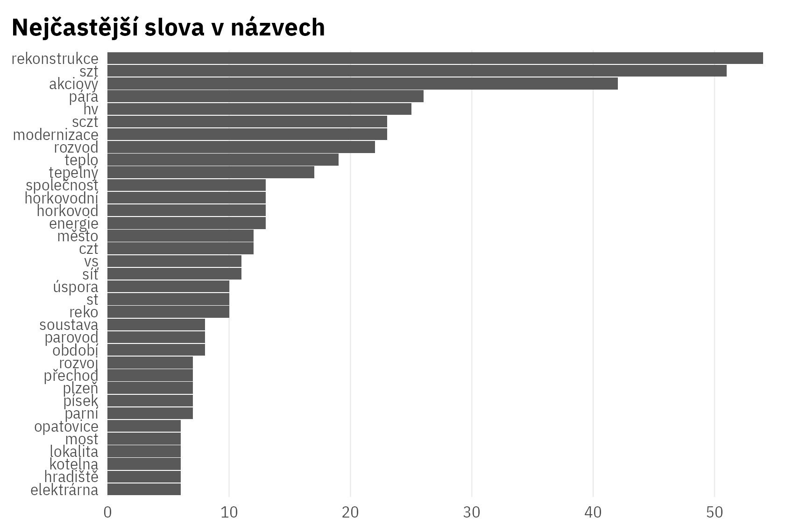

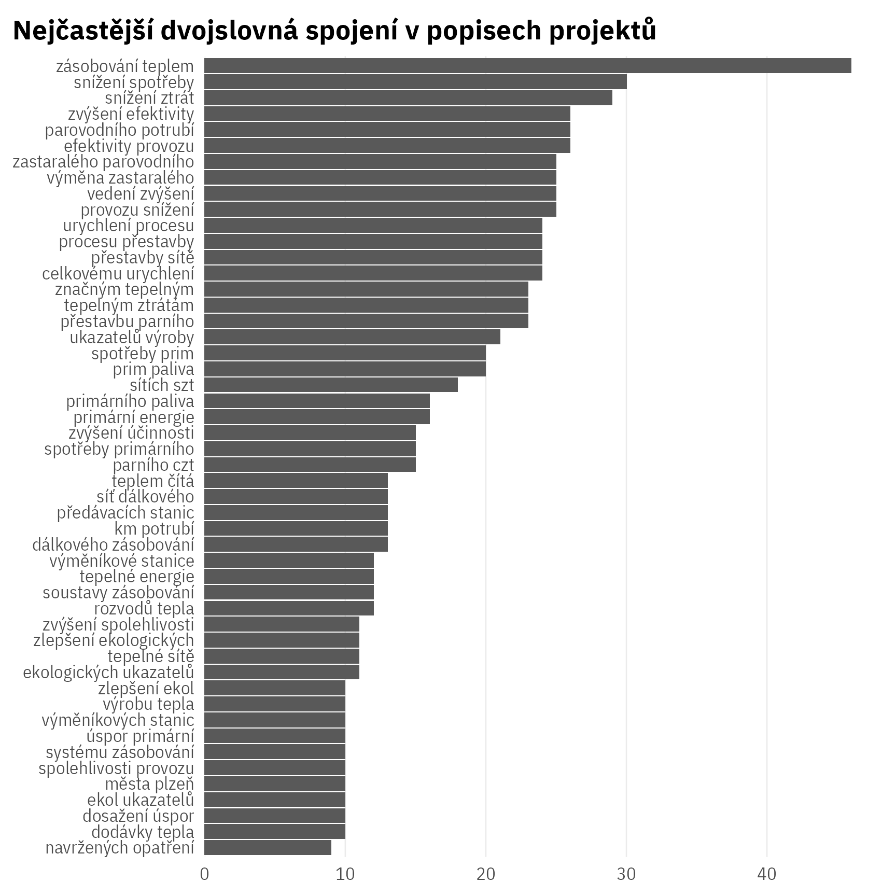
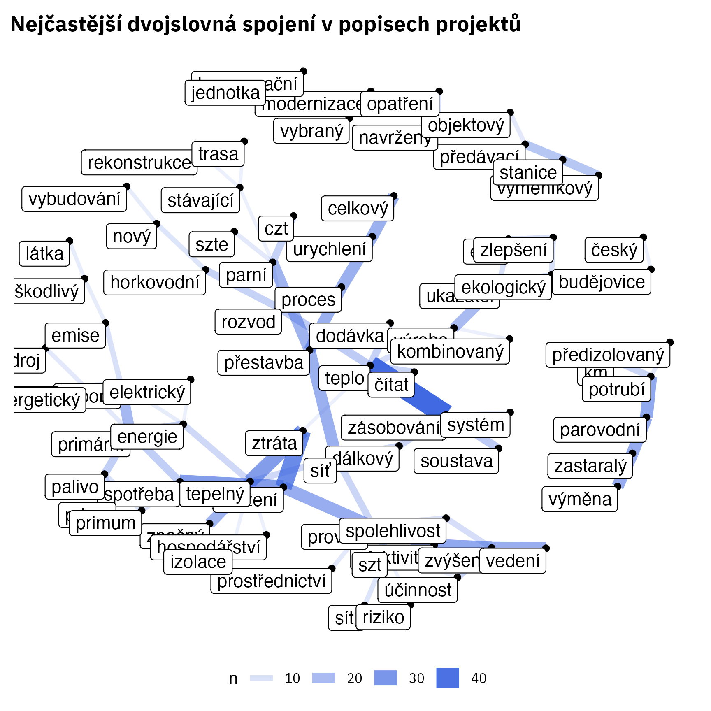
Na úplně jiné skupiny to nevypadá:
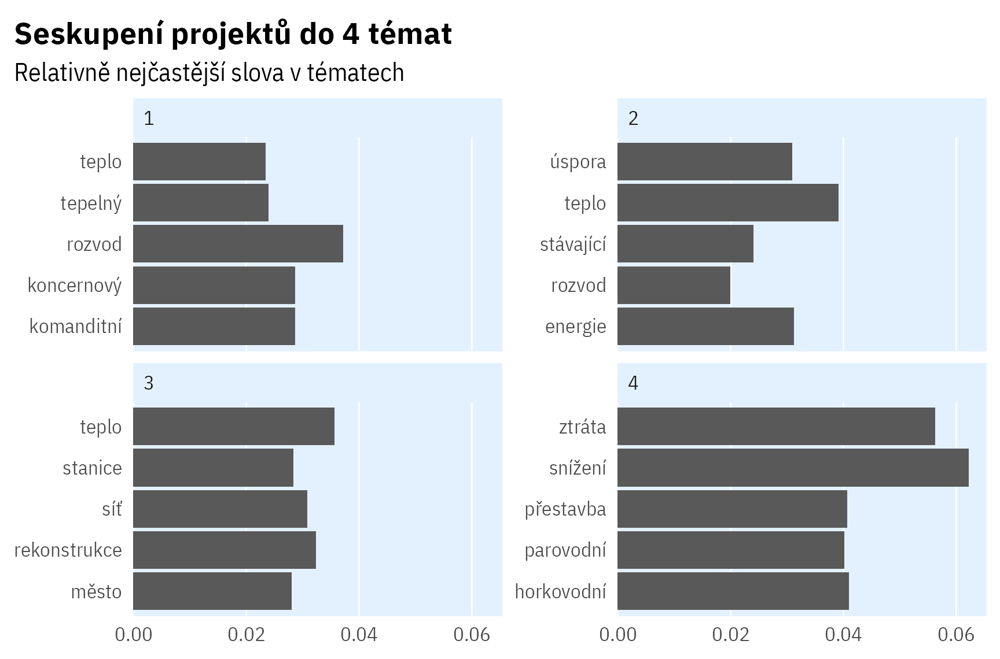
Úspory ve firmách
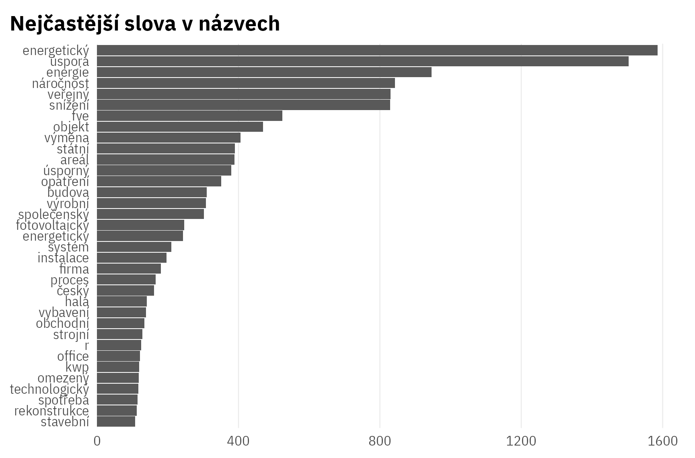
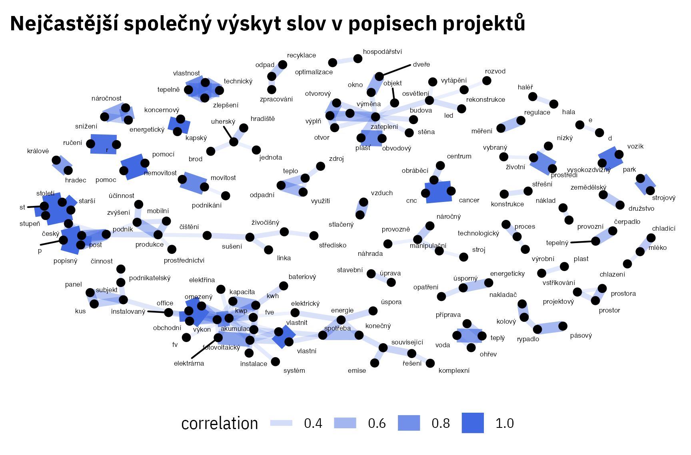
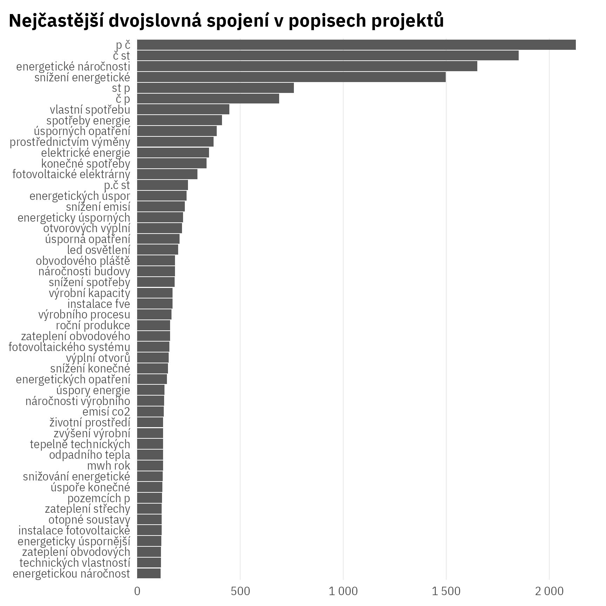
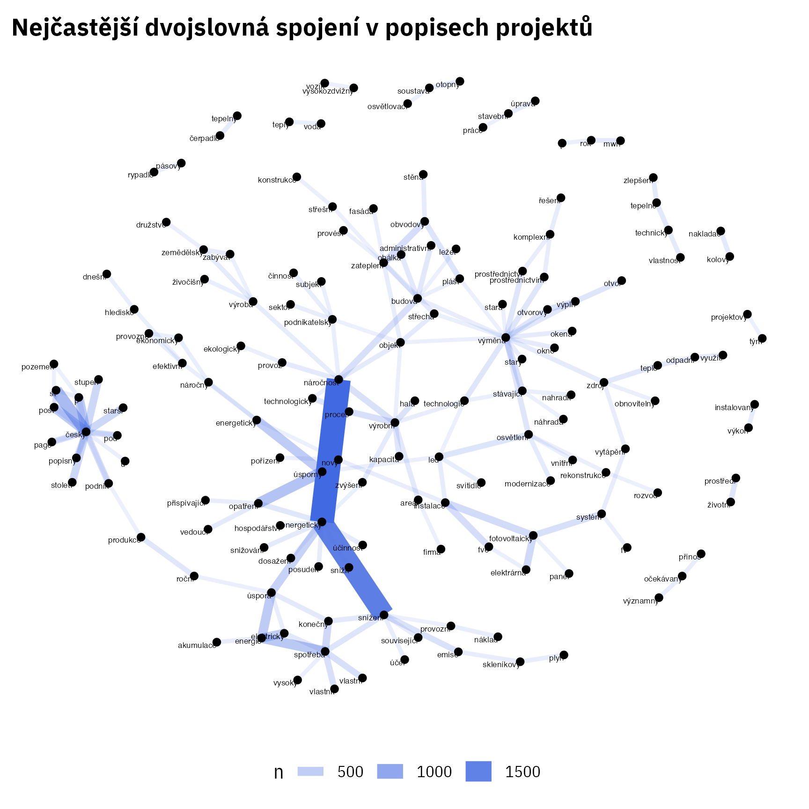
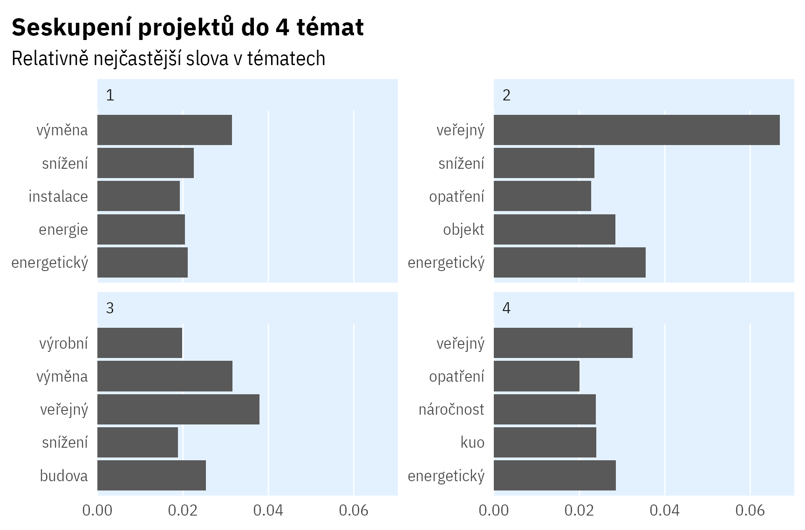